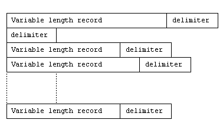
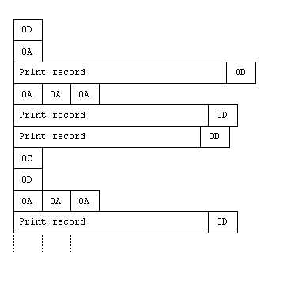
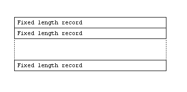
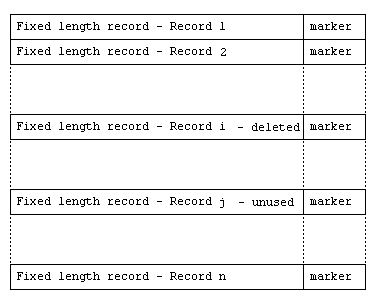
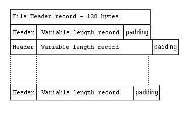
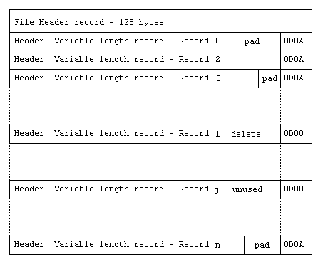

| Callable Sort API | File Status Code Tables |
This COBOL system provides three types of data file organization: relative, indexed and sequential. Additionally, sequential files fall into one of three categories: record sequential, printer sequential and line sequential.
This information is provided for anyone who wants to understand the structure of COBOL files. It can also be useful for debugging programs. However, you do not need to understand these file structures to use data files from COBOL programs.
Caution: You are advised not to process the files yourself using byte-stream I/O, but to use COBOL syntax or the Micro Focus File Handler API. This ensures that applications will function properly if file structures are enhanced or developed in the future.
Line sequential files, printer sequential files, record sequential files with fixed length records and relative files with fixed length records contain neither file nor record headers.
Line sequential files are designed to enable you to read source or text files created with the system editor. As such, the structure is operating system dependent but typically contains variable length records with trailing spaces removed.
In a line sequential file, each record in the file is separated from the next by a record delimiter.

Figure 14-1: Line Sequential Structure
For files created on UNIX systems the default record delimiter is the Line Feed character specified by the single byte x"OA". For files created on DOS or Windows the default record delimiter is the carriage return/line feed character specified by the byte pair x"ODA". Files created using this COBOL system on UNIX can be read on DOS and Windows, and vice versa.
If you set the INSERTNULL configuration parameter to OFF, you must make sure that any COMP data does not contain bytes with a value of x"0A" (record delimiter).
Printer sequential is the structure of files that are destined for a printer, either directly or by spooling to a disk file. The structure of these files reflects what is required to drive a printer and is independent of the operating system.
A printer sequential file consists of a sequence of print records with zero or more vertical positioning characters (such as line-feed) between print records.
A print record consists of zero or more printable characters and is terminated by a carriage return (x"0D").

Figure 14-2: Printer Sequential Structure
In record sequential files with fixed length records, each record immediately follows the previous record in the file and each record is the same length as the maximum length record.

Figure 14-3: Record Sequential File with Fixed Length Records
A relative file with fixed length records is the same as a record sequential file with fixed length records, except that each record is followed by a record marker.
The current state of a record for fixed length relative records is indicated by a one-byte marker as follows:
| Marker (hex) |
Description |
|---|---|
| 0A | Record present |
| 00 | Record deleted or never written |

Figure 14-4: Relative File with Fixed Length Records
A file header is a block of 128 bytes at the start of the file. Indexed files, record sequential files with variable length records and relative files with variable length records all contain file headers. In addition, each record in these files is preceded by a 2 or 4 byte record header.
Note: The file header and record header information is maintained by this COBOL system and must not be altered in any way.
The first record in every variable structure file is a system record called the file header. This is normally 128 bytes in length and takes the following form:
| Offset | Size | Description |
| 0 | 4 | Length of the file header. The first 4 bits are always set to 3 (0011 in binary) indicating that this is a system record. The remaining bits contain the length of the file header record. If the maximum record length is less than 4095 bytes, the length is 126 and is held in the next 12 bits; otherwise it is 124 and is held in the next 28 bits. Hence, in a file where the maximum record length is less than 4095 bytes, this field contains x"30 7E 00 00". Otherwise, this field contains x"30 00 00 7C". |
| 4 | 2 | Database sequence number, used by add-on products. |
| 6 | 3 | Integrity flag. Indexed files only. If this is non-zero when the header is read, it indicates that the file is corrupt. |
| 8 | 14 | Creation date and time in YYMMDDHHMMSSCC format. Indexed files only. |
| 22 | 14 | Reserved |
| 36 | 2 | Reserved. Value 62 decimal; x"00 3E". |
| 38 | 1 | Not used. Set to zeros. |
| 39 | 1 | Organization. 1=Sequential 2=Indexed 3=Relative. |
| 40 | 1 | Not used. Set to zeros. |
| 41 | 1 | Data compression routine number. 0 = No compression 1 = CBLDC001 2-127 = Reserved for internal use 128-255 = User-defined compression routine number |
| 42 | 1 | Not used. Set to zeros. |
| 43 | 1 | Indexed files only - type of indexed file. See the section Indexed Files for a list of indexed file types. |
| 44 | 4 | Reserved |
| 48 | 1 | Recording mode. 0 = Fixed format 1 = Variable format For indexed files, the recording mode field of the .idx file takes precedence. |
| 49 | 5 | Not used. Set to zeros. |
| 54 | 4 | Maximum record length. Example: with a maximum record of length 80 characters, this field will contain x"00 00 00 50". |
| 58 | 4 | Minimum record length. Example: with a minimum record length of 2 characters, this field will contain x"00 00 00 02". |
| 62 | 46 | Not used. Set to zeros. |
| 108 | 4 | Version and build data for the indexed file handler creating the file. Indexed files only. |
| 112 | 16 | Not used. Set to zeros. |
Each record in a variable structure file is preceded by a two- or four-byte record header. The first 4 bits of this indicate the status of the record, for example, a value of 0100 means that this record is a normal user data record.
The remainder of the record header contains the length of the record. For all files where the maximum record size is less than 4095 bytes (excluding the record header), the record header is 2 bytes long. For all other files, the record header is 4 bytes long.
The record header for each record starts at an address which is an exact multiple of the data alignment value for the file type (see the section Indexed Files for details of data alignment values). Consequently, a record may be followed by up to n padding characters, usually spaces. These padding characters are not included in the record length.
| First 4 bits | Record type |
| 1 (0001) | A system record. This indicates a duplicate occurrence record in the data file. |
| 2 (0010) | Deleted record (available for reuse via the free space list). |
| 3 (0011) | System record. |
| 4 (0100) | Normal user data record. |
| 5 (0101) | Reduced user data record (indexed files only). The area immediately following the data, as indicated by the length in the header, indicates the length between the end of the data record plus any padding characters and the start of the next record header. This information is contained in either a 2-byte or 4-byte field (see the section Indexed Files for details). |
| 6 (0110) | Pointer record (indexed files only). The first n bytes following the record header contain the offset in the file to the location of the user data record, where n is the file pointer size for the indexed file type (see the section Indexed Files for details). |
| 7 (0111) | User data record referenced by a pointer record. |
| 8 (1000) | Reduced user data record referenced by a pointer record. |
In a record sequential file with variable length records, each record written is preceded by a record header containing the length of the record.
Up to three padding characters can follow a record to ensure that the next record starts on a four-byte boundary.
The file contains a standard file header record.

Figure 14-5: Record Sequential File with Variable Length Records
A relative file with variable length records follows the basic variable structure but each record is placed into a fixed length slot, the length of the slot being the length of the longest record defined, plus the header and terminator characters.
The record header for each record contains the length of the logical record written, not the length of the physical fixed length slot.
The current state of a record is indicated by a two-byte marker as follows:
| Marker (hex) |
Description |
|---|---|
| 0D0A | Record present |
| 0D00 | Record deleted or never written |

Figure 14-6: Relative File with Variable Length Records
An index file comprises:
The file header contains information about the file and points to the first free space record and the key information record.
Free space records are used to maintain a list of free records in the index file and the data file.
The key information record contains details of every key defined for the file, and, for each key, points to its root index node.
For each key defined, a complete and independent index is constructed. It consists of a tree of index node records which contain actual key values. Every key value in a node points either to a subordinate index node record or to the actual data record associated with the key.
The records in an index file are always the same length, whether they are index nodes, file header or key information records. The size of the records is determined at the time the file is created and cannot be changed subsequently.
The tables below illustrate the different types of indexed file available and the features that they support.
Table 14-1: Indexed Files - Features Supported
| Supports Files Logically >4Gb | Fast Updates on Files with Multiple Duplicate Keys | Maximum Occurrences of Duplicate Key Value | Support for Variable Length Records and Compression | Separate Index File | |
| IDXFORMAT"1" | No | No | 65535 | No | Yes |
| IDXFORMAT"2" | No | No | 65535 | No | Yes |
| IDXFORMAT"3" | No | No | 65535 | Yes | Yes |
| IDXFORMAT"4" | No | Yes | 4 G | Yes | Yes |
| IDXFORMAT"8" | Yes | Yes | 4 G | Yes | No |
Table 14-2: Indexed Files - Physical Characteristics
| Duplicate Occurrence Records | Data Record Alignment | File Pointer Size (bytes) | Residue Length Field | Index Node Includes Record Header | |
| IDXFORMAT"1" | No | 1 | 4 | n/a | No |
| IDXFORMAT"2" | No | 1 | 4 | n/a | No |
| IDXFORMAT"3" | No | 4 | 4 | 2 | No |
| IDXFORMAT"4" | Yes | 4 | 4 | 2 | No |
| IDXFORMAT"8" | Yes | 8 | 6 | 4 | Yes |
The file header is located at offset 0 within the index file. The first 128 bytes are the same as a standard variable structure file header, except for the fields below.
| Offset | Size | Description |
| 0 | 4 | Length of the file header. |
| 39 | 1 | Always contains value 2 for indexed organization. |
| 62 | 14 | Always contains zeros. |
| 76 | 1 | Reserved. Set to 4. |
| 120 | 8 | Offset of logical end of the index file. |
The remainder of the file header contains the following fields:
| Offset | Size | Description |
| 128 | 8 | Offset of logical end of the data file. |
| 136 | 1 | Value 2. |
| 137 | 1 | Value 2. |
| 138 | 1 | Value 4. |
| 139 | 1 | Value 4. |
| 140 | 2 | Contains the number of keys defined for the file. |
| 142 | 1 | Value 0, or 1 if duplicate occurrence records are present. See the section Types of Indexed File for details. |
| 143 | 1 | Value 2 or 4. Number of bytes used for occurrence numbers in indices where duplicates are permitted. |
| 144 | 8 | Offset of the first key information record. |
| 152 | 8 | Offset of the free space record for the data file. For fixed format files, this is a record in the index file of the same format as the index free space record, but the addresses point to free records in the data file. For variable format files, this is the address in the data file of the data free space record. This record has a different structure to the index free space record. |
| 160 | 8 | Offset of the first free space record in the index file. |
| 168 | 4 | Value zeros. |
| 172 | 4 | Index file record length (node size). |
| 176 | 8 | Value zeros. |
| 184 | 328 840 3912 |
Reserved. Value zeros. For node size 512. Reserved. Value zeros. For node size 1024. Reserved. Value zeros. For node size 4096. |
The free space record points to the location of free records in the index file or data file (fixed length files only). Continuation records of the same size and structure are created as needed, each pointing to the next continuation record.
The first free space record is pointed to by the file header.
A free space record contains:
| Size | Description |
| 2 | Record header. Present only if index nodes have record header (see the section Indexed Files) |
| 2 | Bit 15 Security flag. Value should match value of trailing security
flag. Bits 14-0 Pointer to the end of the last free record address entry, relative to the start of this record. |
| file-pointer-size | Offset of free space continuation record. Zero if no further continuation records. |
| file-pointer-size ... file-pointer-size |
Offset of a free record in the index file. ... Offset of a free record in the index file. |
| 2 | Bit 15 Security flag. Value should match value of leading security
flag. Bits 14-0 Reserved. Value x"7F". |
Note: The size of file-pointer-size varies according to the type of indexed file. See the section Indexed Files for details.
The key information record describes the physical characteristics of all the keys used in the file, including the length of each key; where the key is defined within the data record; whether duplicates are permitted, and so on. Within the key information record structure is a substructure, the key block. A key block is created for each key defined. The first key block always describes the primary key. Subsequent key blocks define the alternate keys in the order specified when the file was created. If the key information record is not big enough to hold key blocks for all the keys defined, equal sized continuation records are created, each pointing to the next, until all the keys have been defined.
The key information record contains:
| Size | Description of the field |
| 2 | Record header. Present only if index nodes have record header. See the section Indexed Files for details. |
| 2 | Bit 15 Security Flag. Value 0. Bits 14-0 Pointer to the end of the last key block entry in this record, relative to the start of this record. |
| file-pointer-size | Address of continuation record. Zero if no further continuation records. |
| n ... n |
Key block for primary key ...one for each alternate key in the file Key block |
| 1 | Reserved. Value x"FF". |
| 1 | Reserved. Value x"7E". |
For every type of indexed file except IDXFORMAT"8", the key block contains:
| Size | Description of the field |
| 2 | Length of this entry in bytes. |
| 4 | Address of the root index node record for this key. |
| 1 | Key compression: Bit 2 Compression of trailing spaces. Bit 1 Compression of leading characters. Bit 0 Compression of duplicates. |
| 5 ... 5 |
Key component block ...if the key is split, one block per component Key component block |
For IDXFORMAT"8" files, the key block contains:
| Size | Description of the field |
| 2 | Length of this entry in bytes. |
| 1 | Sparse key character. |
| 13 | Reserved |
| 1 | Key compression: Bit 3 Compression of trailing nulls. Bit 2 Compression of trailing spaces. Bit 1 Compression of leading characters. Bit 0 Compression of duplicates. |
| 1 | Key flags: Bit 6 Duplicates permitted. Bit 1 Sparse key. |
| 6 ... 6 |
Key component block ...if the key is split, one block per component Key component block |
For every type of indexed file except IDXFORMAT"8", the key component block contains:
| Size | Description of the field |
| 2 | Bit 15 Duplicates permitted flag. If set, duplicates are permitted. Bits 14-0 Length of component in bytes. |
| 2 | Offset of component within data record, starting at 0. |
| 1 | Component type. Value zeros. |
For IDXFORMAT"8" files, the key component block contains:
| Size | Description of the field |
| 2 | Length of component in bytes. |
| 2 | Offset of component within data record, starting at 0. |
| 1 | Component flags: Bit 6 Descending |
| 1 | Component type: Bit 7 Numeric Bit 6 Signed Bits 5 - 0 If not numeric: 0 alphanumeric If numeric: h"00" DISPLAY (SIGN TRAILING INCLUDED) h"01" DISPLAY (SIGN TRAILING SEPARATE) h"02" DISPLAY (SIGN LEADING INCLUDED) h"03" DISPLAY (SIGN LEADING SEPARATE) h"20" COMP h"21" COMP-3 h"22" COMP-X h"23" COMP-5 h"24" FLOAT |
For each key defined, a complete and independent index is constructed which consists of a tree of index node records. Each index node record contains actual key values associated with data records written to the indexed file. Every key value in a node points either to a subordinate index node record or, if it is a leaf node, to the data record associated with the key.
The top level node record is called the root.
The default node size is 1024 bytes, but can change depending on the largest key size defined for the file. If the largest key is greater than 238 bytes, the node size is 4096 bytes.
Note: It is possible to change the default node size by setting the XFHNODE environment variable to one of 512, 1024 (the default) or 4096 bytes. However, if you set XFHNODE to 512 and the largest key value is greater than 120 bytes, the value of XFHNODE will be overwritten by 1024. Also, if you set XFHNODE to 512 or 1024 and the largest key value is greater than 248, the value of XFHNODE will be overwritten by 4096. The setting of XFHNODE is only effective at the time that the file is created - you cannot alter the node size of an existing file.
The index node record contains:
| Size | Description of the field |
| 2 | Bit 15 Security flag. Value should match value of trailing security
flag. Bits 14-0 Pointer to the end of the last key value block in this record, relative to the start of this record. |
| n ... n |
Key value block ... Key value block |
| 1 | Index number. The value is the same for all nodes belonging to the same index tree. Contains zero if this is the primary key. |
| 1 | Bit 7 Security flag. Value should match value of leading security
flag. Bits 6-0 Level of this node. Leaf nodes are level 0. |
The key value block contains:
| Size | Description of the field |
| 1 | Present only when compression of leading characters is enabled. It contains a count of leading characters identical to those in the previous key. It will always be 0 for the first key in a node. |
| 1 | Present only when compression of trailing spaces is enabled. Contains a count of trailing spaces for this key value. |
| n | Key value. |
| duplicate-occurrence | Optional. Duplicate occurrence number. See the section Indexed Files for details. This field is present only if duplicates are allowed for this key. It contains the duplicate occurrence count. The first key stored that is a duplicate has this field set to 1. Second duplicate has this field set to 2, and so on. |
| file-pointer-size | Most significant bit: Reserved if duplicate key compression is enabled. Set if the next key value block is a duplicate of this one. Remainder: Address of the data record in the data file if this is a leaf node; otherwise, the address of the subordinate index node record in the index file. |
The data file part of an indexed file contains all the data records.
Information about free records in the data file is maintained so that space created by deleting records can be re-used, preventing the file from growing too quickly.
In a fixed format indexed file, this information is held in a free space record in the index file. This record has the same structure as the index free space record, but the addresses point to data file records.
In a variable format indexed file, the information is held in a system record in the data file. All records are a multiple of the data record alignment size. For each slot length, a chain is maintained for all slots of that length that are free. The start of the chain for all lengths is maintained in the data free space record in the data file. This system record is always the same length as the maximum slot length or possible maximum compressed length (a record's length may increase when it is compressed) for the file. Each free slot pointed to contains, in the first n bytes after the record header, the address of the next free slot of the same length. For the last slot in the chain, this address contains zero.
The data free space record contains:
| Offset | Size | Description of the field |
| 0 | 2 or 4 | Record header. |
| 2 or 4 | 4 | Offset of the first free data slot of length 8 bytes. |
| 6 or 8 ... n |
4 | Offset of the first free data slot of length 12 bytes. ... Offset of the first free data slot of maximum length. |
| Callable Sort API | File Status Code Tables |